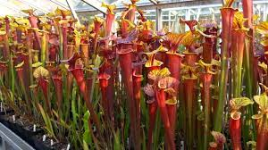
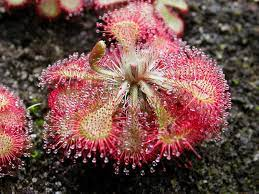
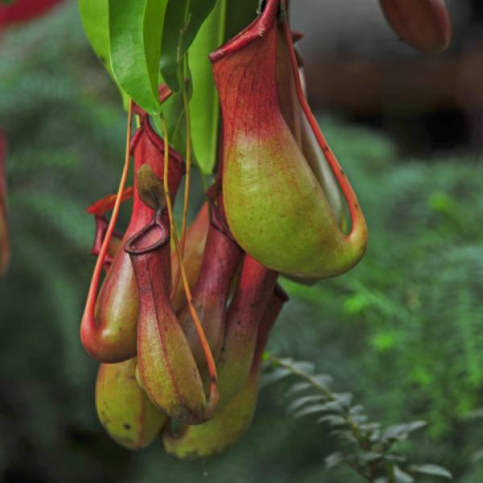
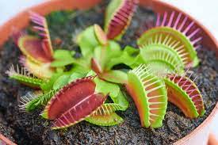

Las plantas carnívoras son especies que se caracterizan por alimentarse de insectos y otros seres pequeños para obtener nitrógeno. Existen varios tipos de plantas carnívoras, cada una con características únicas:
- Sarracenia: Son plantas carnívoras
originarias de Norteamérica. Tienen una forma característica de tubo,
al final del cual se genera el néctar que atrae a los insectos.

- Drosera: También conocido como Rocío del sol, este género de p
lantas carnívoras es uno de los más numerosos, y destacan por su forma de caza: ge
neran unas gotas de un líquido pegajoso y rico en azúcares que hace quedarse pegado
s a los insectos que vienen a alimentarse de él.

- Nepenthes: Las Nepenthes, llamadas tambié
n plantas jarro o copas de mono, son originarias de las regi
ones tropicales y resultan muy llamativas por sus bonitas tramp
as jarra, llenas de un liquido almibarado que atrae a los insectos.

- Cephalotus follicularis: Es una planta carnívora que se
encuentra en la lista de nombres y ejemplos de plantas carnívoras.

- Aldrovanda vesiculosa: Es otra planta carnívora que se encuentr
a en la lista de nombres y ejemplos de plantas carnívoras.

- Dionaea muscipula o Venus atrapamoscas: Es una de las plantas
carnívoras más conocidas y también se encuentra en la lista de nombres y ejemplos
de plantas carnívoras.
